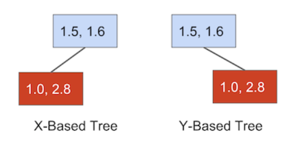
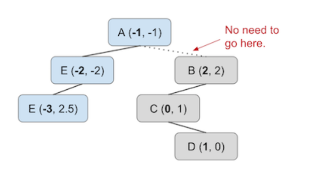
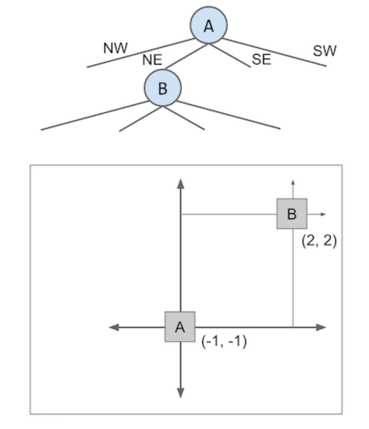
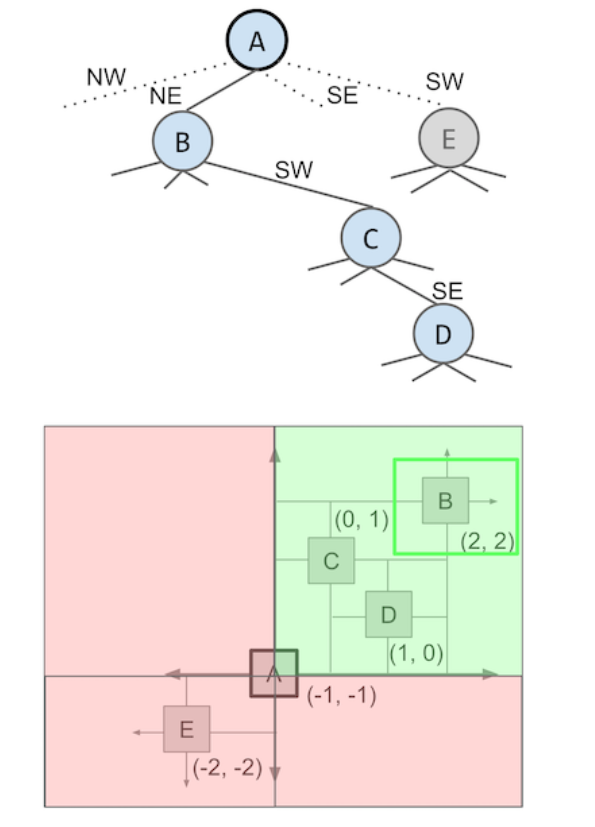
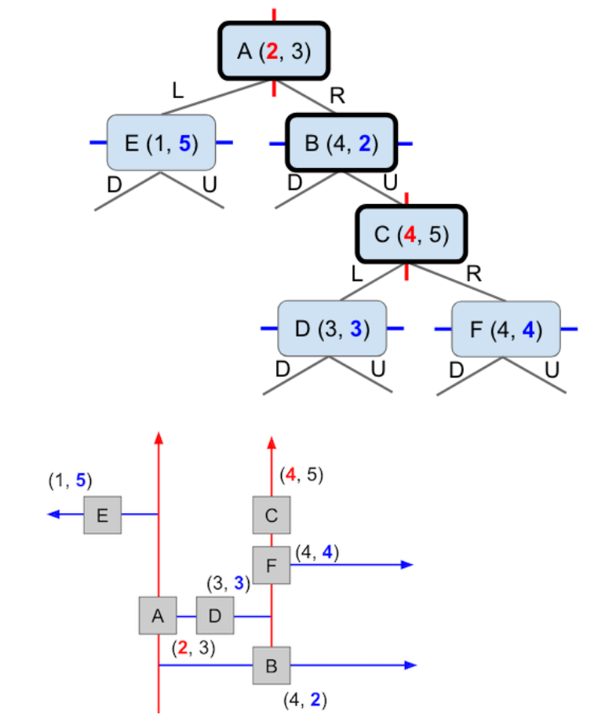
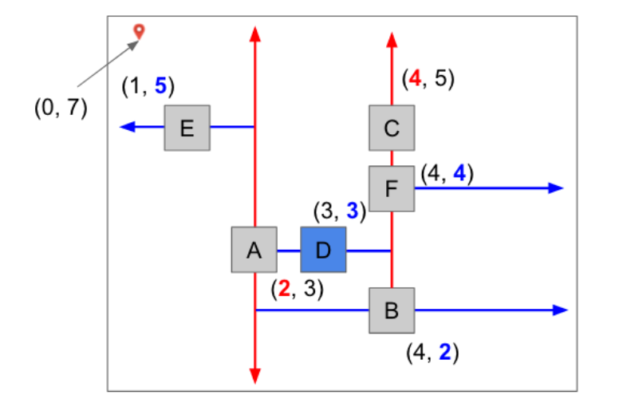
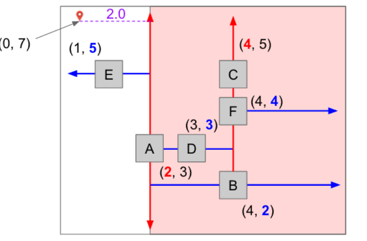

QuadTrees
Uniform Partitioning

现在有一张图片，上面有一匹马，还有很多星球，把马和星球都视为不同的对象，现在我们想知道离马最近的对象是谁？
显然，我们可以通过把所有对象与马之间的距离比较一遍来求得最近的对象，这样做的话复杂度为N。似乎不太好，接下来想办法降低复杂度
先来尝试一下哈希表，假如所有的对象都存储在哈希表中，让我们回忆一下哈希表的特性，他的所有成员有一个对应的hashcode，分布是随机的，所以好像并没有什么可以用来减少比较次数，还是得全部比较一遍，所以不太好
接下来尝试Uniform Partition，我们把图片分割为4x4的16个小方格，然后通过马的x和y了解到它在哪个区域，之后只需要对他所在的区域的周围一圈找就行了，这样我们就不用遍历整个图像，复杂度降到了N/16，可以发现，虽然有进步，但是并不明显，数量级没有发生变化
QuadTrees
刚才用了两种方法，但是复杂度都在一个量级上面
下面介绍四叉树，为什么我们还是想用树形结构来解决离最近的问题呢？因为树形结构能够清晰的表示和体现空间上的关系，但是哈希表却不行。
基于X和Y的树
就是把x和y分开


如第二图，X是经过优化的，也就是x符合我们原先的树的样子，但是Y是没有也无法优化的，这种情况下，当我们想找某个对象的时候，有可能他是被优化的，则进行剪枝操作，把右边的都剪了，我们的复杂度就变成了logN，但是如果他是没被优化的，则仍然是N
QuadTree
先来看下结构

每个节点有四个子枝，指向四个方向，也就是二维平面上的东北西北东南西南
四叉树和二叉树一样，我们插入节点的顺序决定了树的拓扑结构，
在四叉树上进行搜索

在搜索的时候，看目标节点在哪个方向，活用剪枝操作剪掉其他三个方向的枝，来降低复杂度
K-D Tree
直接看图吧

LRDU是方向，可以看到，他相邻两级节点的子枝对应不同的方向，在上下和左右中切换
从下图作出一个K-DTree有不止一种作法
用K-D树解决最邻近

有两个步骤
决定一个根节点，计算它与目标节点的距离，然后因为根节点有两条子枝指向不同的方向，用这个方向把图片分成两部分
然后从他的两个子枝中找离目标节点更近的那个节点
对子枝上的节点重复上一个操作直到没有更近的